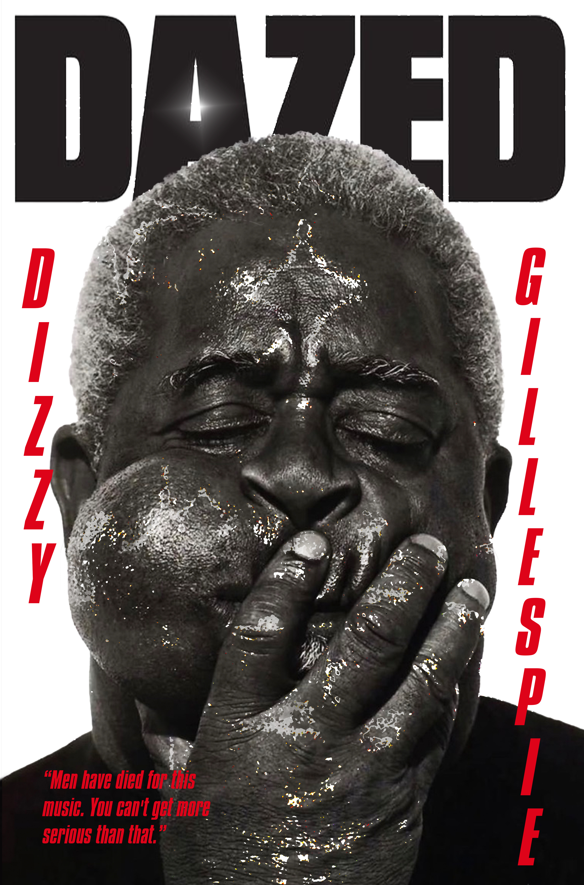
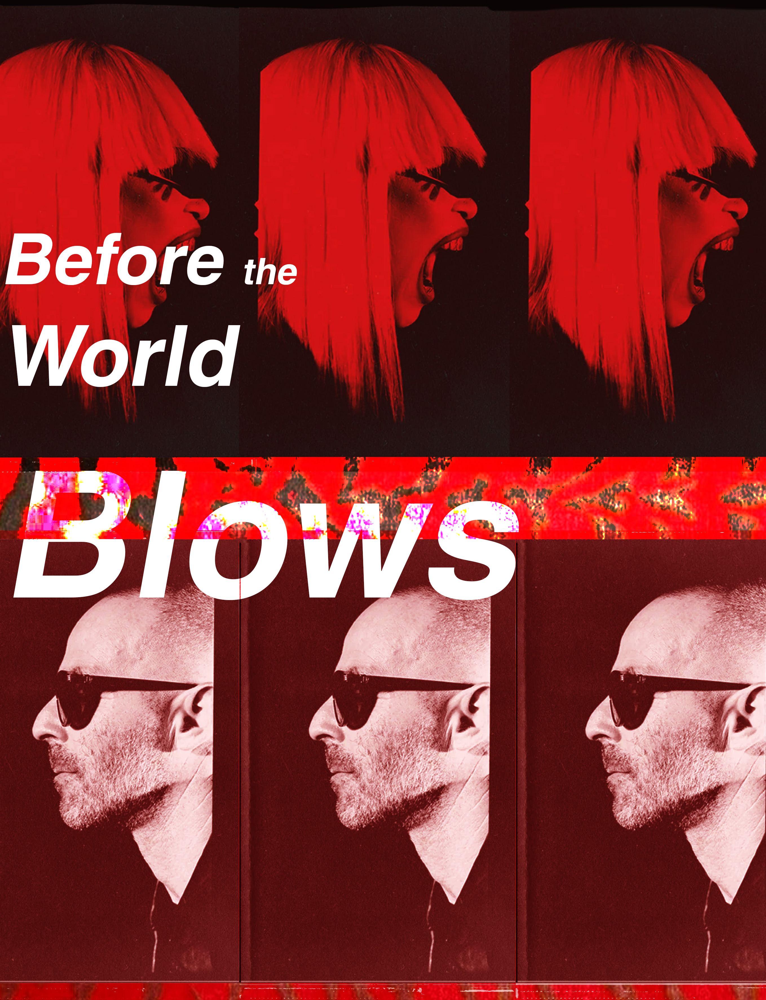
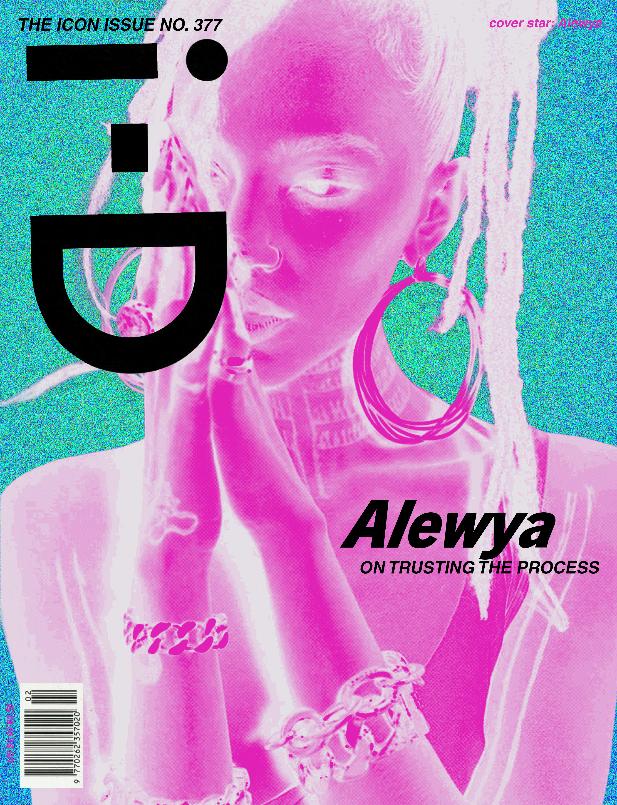
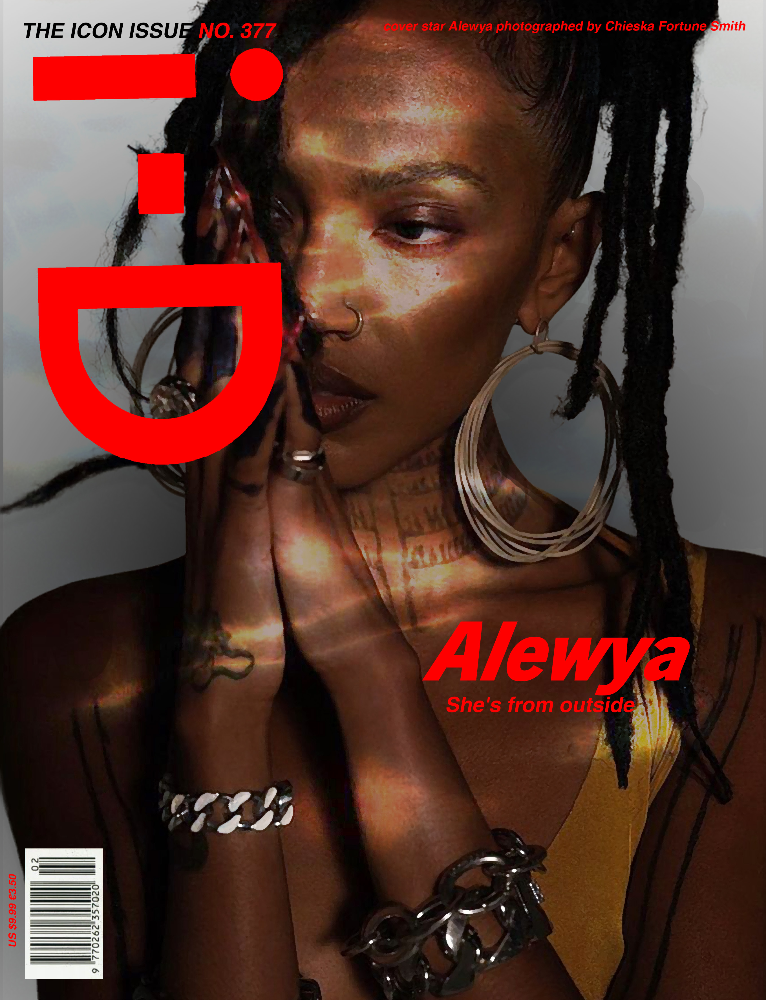
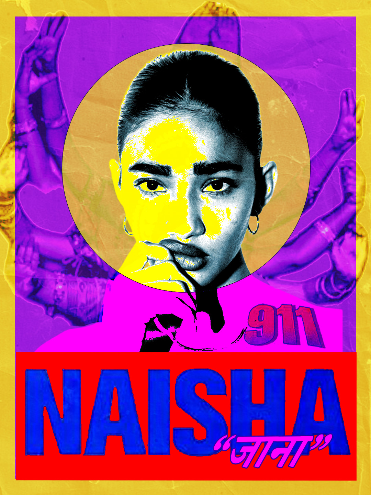
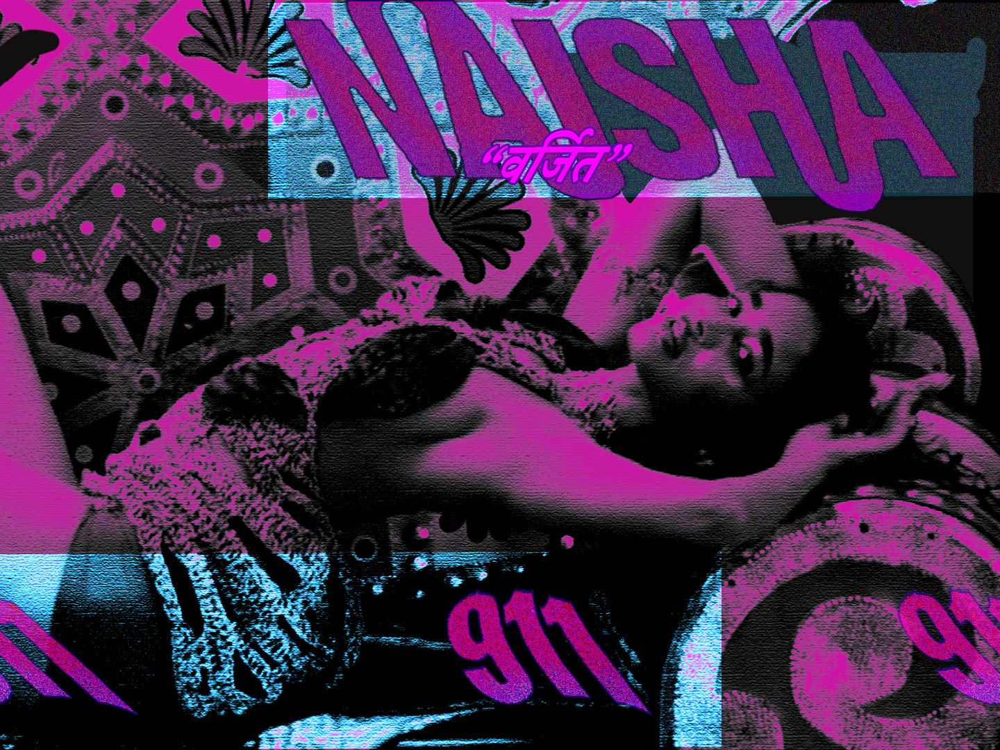
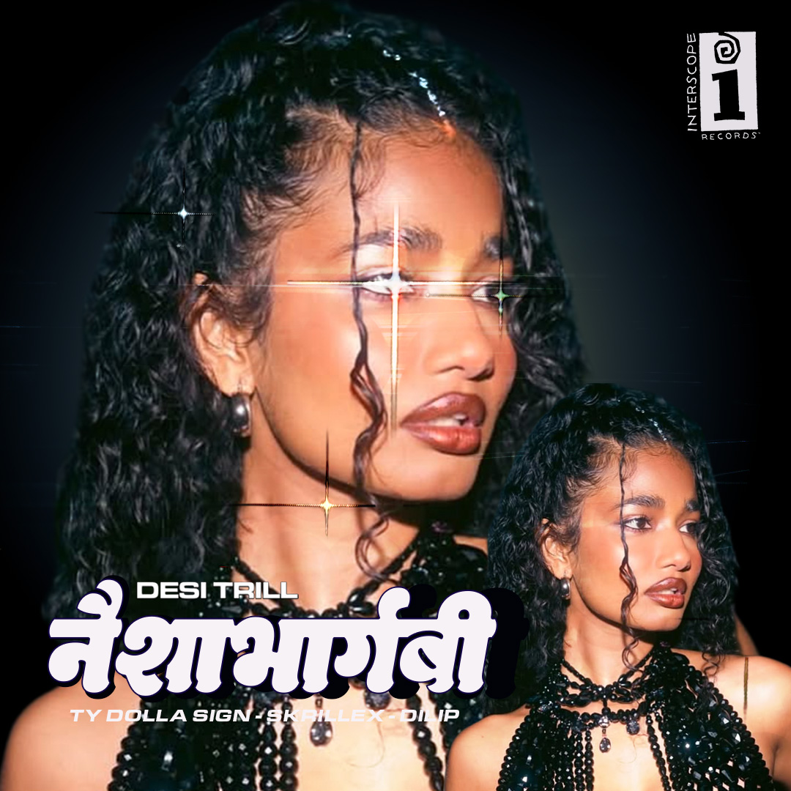
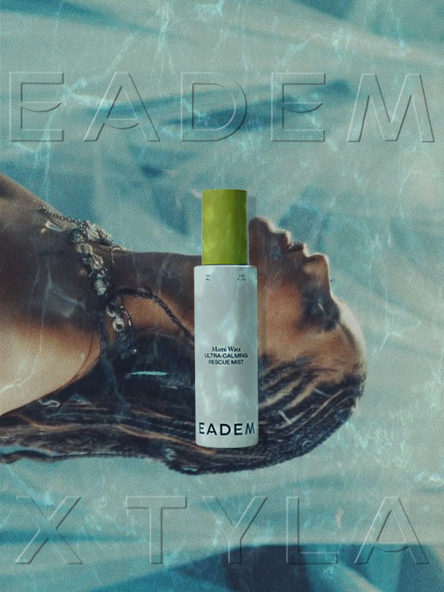
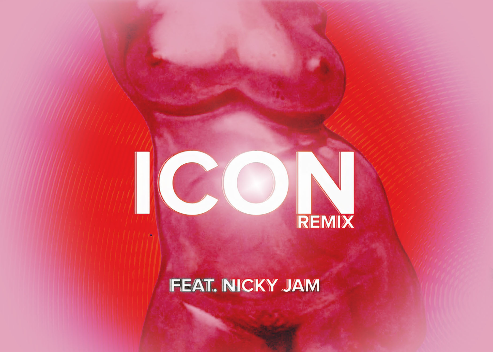

Cover & poster · Spec & self-initiated · August 2026
Dazed: Dizzy Gillespie. A spec cover built around a single gesture: the hand across the mouth, and a masthead broken by it. Before the World Blows. A two-register poster: a repeated frame sequence read like contact-sheet stills, cut across by a single horizontal band.


Dizzy Gillespie: photograph by Herb Ritts, Paris, 1989. Before the World Blows: photograph by Adraint Bereal. Both spec and self-initiated. Not affiliated with Dazed Media.
Cover · i-D 377 · Spec, not commissioned · August 2026
A spec cover proposing the next issue number rather than reproducing a real one, so the piece reads as a proposal and not a fake.


Cover star Alewya. Photograph by Chieska Fortune Smith. Masthead derived from Futura Demi Bold.
Campaign · Naisha “911” · Spec, self-initiated · August 2026
A spec poster series for Naisha Bhargabi's debut EP 911, released on Interscope / Desi Trill in August 2026.



Spec. Not commissioned by the artist or the label. Three posters for the three tracks: Contraband, so then, jaana.
Campaign · Eadem · Spec, not commissioned · August 2026
A spec campaign built on a product already in the brand's own hero position, rather than on an invented launch.

Spec. Not commissioned by Eadem, and not affiliated with the artist. Five-second film made in After Effects.
Single artwork · Spec · 2026
Chromatic bloom and a thin, widely tracked sans held at the optical centre.

Spec. Not commissioned.